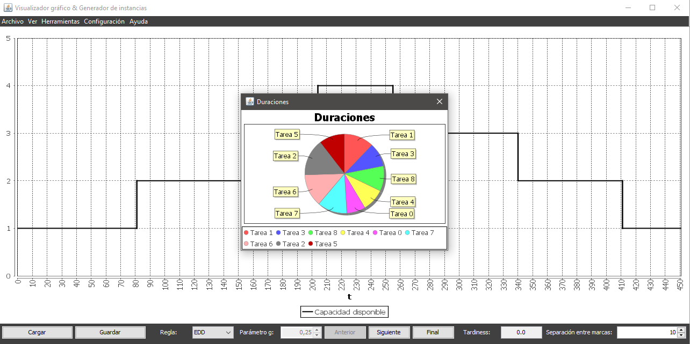

El gráfico de duraciones muestra la duración de cada tarea relativa a la suma de todas las duraciones en un gráfico de sectores.
El gráfico de duraciones se va actualizando conforme las tareas de planifican, eliminando del gráfico las duraciones de aquellas tareas que hayan sido planificadas, hasta quedar vacío (excepto en la planificación manual).